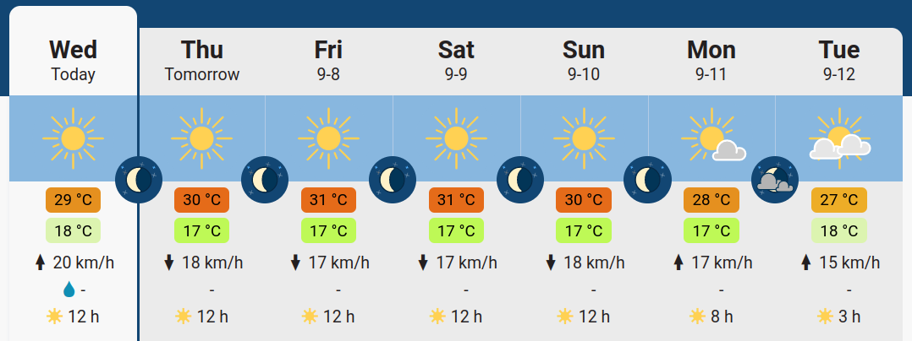

2023-2024
1 Project: a weather forecast app
For this course, the grading consists in creating a Weather Forecast App for Montpellier.
1.1 Setting and objective
The main objective of this project is to create:
- a GitHub repository containing all the code and documentation of your project
- a GitHub web page displaying images representing the weather forecast for the 4 next days (in Montpellier) that automatically updates. The website URL should be accessible in the README.md at the root of your Git repository.
- a short description of the methodology used, below the forecast itself.
1.2 Guidelines
For this project, you need to create a GitHub repository with your code, and we suggest using GitHub action for the deployment phase (weather forecast update and website generation).
The data to be used for your project is to be obtained from open-meteo.com.
You have to create a simple webpage using a GitHub page and a GitHub action with
Quartofor instance; see https://quarto.org/docs/publishing/github-pages.html for details, and also the associatedymlhere. The webpage created will display the weather forecast in Montpellier for the next 4 days. For instance, it could display something like this:

You should display the forecast together with the highest/lowest temperature for the day, wind average, and amount of precipitation. The closer you can reproduce something in the spirit of the previous illustration, the higher the grade.
An additional constraint is that the app should be autonomous once created, and should be automatically refreshed every day (like a real weather forecast website!). An example to help you in this task is available here (and the associated source code), updating time series on a monthly basis. For the automatic update and scheduling, see the schedule event description.
The only image format accepted is SVG. See examples from freesvg.org, creativecommons, clker, openclipart, etc.
The code must be structured, commented and properly formatted with the
blacklinter and followpep8convention. Guidance on this can be obtained here https://www.freecodecamp.org/news/auto-format-your-python-code-with-black/ or here for VSCode.